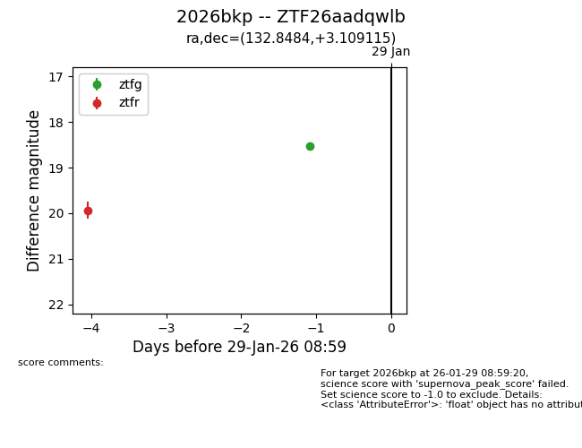
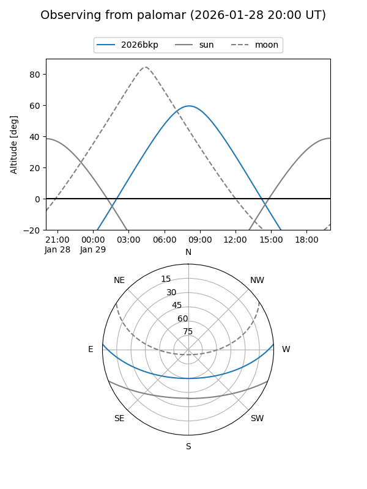

2026bkp
Target 2026bkp at 2026-01-28 07:26
Aliases and brokers:
FINK: link
Lasair: link
ALeRCE: link
TNS: link
YSE: link
alt names
ZTF26aadqwlb (ztf,fink_ztf)
2026bkp (tns,yse)
Coordinates:
equatorial (ra, dec) = 132.8484,+3.10911
equatorial (HMS+DMS) = 08:51:23.60,+03:06:32.81
galactic (l, b) = (224.6451,+27.96428)
Flags:
Photometry:
last ztfg=18.53, ztfr=19.93
1 ztfg, 1 ztfr detections
Lightcurve

Visibility


Additional plots